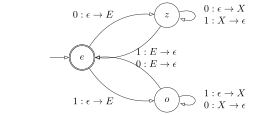

all boolean functions can be represented (from truth table)
Completeness of a set of connectives
a set of connectives is complete iff any bool fn can be
represented by P\in\mathcal F using
only connectives (uoc) from the set
Complete Connectives
{ ¬, ∨ } and { ¬, ∧ } are complete
Prove C as set of connectives is Complete
(choose { ¬, ∨ } xor { ¬, ∧ })
(find a LEQV of ¬P and a LEQV of P ∧ Q
that uoc C)
define \mathcal G_{PV} as the
smallest set such that
base: x ∈ PV ==> x ∈ G
IS: P, Q ∈ G ==> ¬P, (P ∧ Q) ∈ G
structural induction on def of
∀F uoc G, ∃F' uoc C st F <=> F'
base: F = x ∈ PV let F' = x uoc C
IS: let any P,Q ∈ G - PV
assume ∃P',Q' uoc C and P <=> P' and
Q <=> Q' as IH
case F = ¬P, let
F' = {something with P' uoc C}
∴ F' uoc C [IH]
∴ {F' <=> F} [IH] as wanted
case F = (P ∧ Q), let
F' = {sth with P' and Q' uoc C}
∴ F' uoc C [IH]
∴ {F' <=> F} [IH] as wanted
∵ { ¬, ∧ } is complete ∴ C is
complete
Prove C as a set of connectives is NOT complete
(choose { ¬, ∨ } xor { ¬, ∧ })
(find P(F) that is true ∀F uoc C, but
falsifiable by F uoc { ¬, ∧ })
define \mathcal G_{PV} as the
smallest set that uoc C
define P(F)
structural induction on def of F uoc C to show
∀F ∈ G, P(F)
L=\{x\in\Sigma^\ast:\#(x,0)=\#(x,0)\}
PDA vs DPDA
DPDA

Nondeterministic PDA that does the same thing
8.4 RLG and SRLG
Right-Linear CFG
CFG G=(V,\Sigma,P,S) is
right-linear iff \forall
(\_,\alpha)\in P\begin{align*}
\alpha=\varepsilon\textsf{ or }\alpha=xB\tag{$x\in\Sigma^\ast\enspace
B\in V$}
\end{align*}
is strict right-linear iff \forall(\_,\alpha)\in P\alpha=\varepsilon\textsf{ or }\alpha=B\textsf{ or
}\alpha=aB\tag{$a\in\Sigma\enspace B\in V$}
The Big Result++
for a language L, then equiv:
\exists R\in\mathcal RE\enspace L=\mathcal
L(R)
\exists\textsf{DFSA }M\enspace L=\mathcal
L(M)
\exists\textsf{NFSA }M\enspace L=\mathcal
L(M)
\exists\textsf{RL }G\enspace L=\mathcal
L(G)
\exists\textsf{SRL }G\enspace L=\mathcal
L(G)
8.2 CFG
CFG G=(V,\Sigma,P,S)
where
V set of variables
\Sigma set of terminals
P\in V\times(V\cup\Sigma)^\ast set of
productions
S start symbol
properties
V\cap\Sigma=\varnothing
for (A,\alpha)\in P\quad A\to\alpha is
a production
Language \mathcal L(G) from derivation
for \alpha,\beta\in(V\cup\Sigma)^\ast
Math
Signature in Rust
\alpha\Rarr\beta
fn direct_yields(α, β) ->bool
\alpha\Rarr^\ast\beta
fn yields(α, β) ->bool
Definition.
\begin{align*}
\alpha\Rarr_G\beta\iff&\,\exist\alpha_1,\alpha_2\in(V\cup\Sigma)^\ast\enspace
A\to\gamma\in P\textsf{ st }\\
&\alpha=\alpha_1A\alpha_2\quad\beta=\alpha_1\gamma\alpha_2\\
\alpha\Rarr_G^\ast\beta\iff&\,\exist (\alpha_i)_{i=1}^n\textsf{ st
}\\
&\alpha_1=\alpha\quad\alpha_n=\beta\\
&\forall 1\le i<k\enspace \alpha_i\Rarr_G\alpha_{i+1}\\
\end{align*}\mathcal
L(G)=\{x\in\Sigma^\ast:S\Rarr_G^\ast x\}\textsf{ is a CFL}
Design CFG Left-to-Right
find variables and what they should produce
for each variable
fix each char from \{\varepsilon,0,1\} as prefix
find necessary conditions for the rest
avoid restrictions on the suffix
L=\{x\in\Sigma^\ast:\#(x,00)=\#(x,11)\}
Intuitions
\varepsilon\in L\quad\therefore
S\Rarr\varepsilon
L2R: 0\color{orange}A can be 0\color{orange}0B or 0{\color{orange}1B}\quad\therefore\#(x,00)
varies
\therefore need to generate new \color{orange}11 in \color{orange}A
\implies most general way: concat \color{orange}x1 and \color{orange}1y
\therefore need prefix and suffix \implies 4 vars
notice <A10><A11> === <A11>
Variables: let P:\#(x,00)=\#(x,11)
S:\{x:P(x)\}
A_{00}:\{x:P(x)\textsf{ and }\exists
y,z\in\Sigma^\ast\enspace x=0y\textsf{ and }x=z0\}
A_{01}:\{x:P(x)\textsf{ and }\exists
y,z\in\Sigma^\ast\enspace x=0y\textsf{ and }x=z1\}
A_{10}:\{x:P(x)\textsf{ and }\exists
y,z\in\Sigma^\ast\enspace x=1y\textsf{ and }x=z0\}
A_{11}:\{x:P(x)\textsf{ and }\exists
y,z\in\Sigma^\ast\enspace x=1y\textsf{ and }x=z1\}
ambiguous CFG: ParseTree \to string is
not injective
inheriently ambiguous CFL: \exist G st
\mathcal L(G)=L and G is ambiguous
Ambiguous CFG S\to\varepsilon,0S1S,1S0S
for S\Rarr^\ast0101
0 1 0 1ε good 0ε1 0 1 good
↑ ▔▔▔ ↑▔ ↑▔↑ ▔▔▔
S S
┌─────────┬─┴───────┬───┐ ┌───┬───┬┴────────┐
0 S 1 S 0 S 1 S
┌───┬─┴─┬───┐ │ │ ┌───┬─┴─┬───┐
1 S 0 S ε ε 0 S 1 S
│ │ │ │
ε ε ε ε
0 1 0 1 0 1 0 1
7 FSA and Regex
\mathcal P is powerset
7.6 The Pumping Lemma
The Pumping Lemma
if L\sube\Sigma^\ast is a regular
lang, then \exist n>0 st \forall x\in L\enspace\exist
u,v,w\in\Sigma^\ast st all
x=uvw
v\ne\varepsilon
|uv|\le n
\forall k\in\mathbb N\enspace uv^kw\in
L
choose good string: \small
L=\{x:\texttt{x.count(1) == x.count(0)}\}
by way of contradiction, assume L
is regular
\therefore\exists n\in\mathbb N as in
the Pumping Lemma
let x=0^n1^n
\therefore x\in L and |x|=2n\ge n by def of L
\therefore by Pumping Lemma, \exists u,v,w\in\Sigma^\ast st
x=uvw
v\ne\varepsilon
|uv|\le n
\forall k\in\mathbb N\enspace uv^kw\in
L
\begin{align*}
\because&\, uv=0^m\quad 0\le m\le n\tag{\sf by 1 3}\\
\therefore&\, v=0^k\quad 0<k\le n\tag{\sf by 2}\\
\therefore&\,uv^2w=uvvw=0^{n+k}1^n\\
\therefore&\, uv^2w\not\in L\tag{$k>0\implies n+k\ne n$}\\
\therefore&\,\textsf{contradicts (4)}\\
\therefore&\, L\textsf{ is not regular}
\end{align*}
by cases and choose good k: L=\{10^k1:k\textsf{ is prime}\}
by the way of contradiction, assume L is regular \therefore\exists n>0 as in Pumping
Lemma let x=10^p1 where p>n is a prime \therefore x\in L by def and |x|=p+2>p>n
\therefore\exists
u,v,w\in\Sigma^\ast st
x=uvw
v\ne\varepsilon
|uv|\le n
\forall k\in\mathbb N\quad uv^kw\in
L
case u=\varepsilon: \begin{align*}
&\therefore\exists i<n\textsf{ st }v=10^i\quad w=0^{p-i}1\\
&\because uv^0w\in L\tag{\sf by 4}\\
\textsf{but }&uv^0w=w=0^{p-i}1\not\in L\tag{$\nexists x\in L$ st
$\#_1(x)=1$}\\
&\therefore\textsf{contradicts }L\textsf{ is regular}
\end{align*}
case u\ne\varepsilon\begin{align*}
&\therefore\exists0<j<i<n\textsf{ st }u=10^{i-j}\quad
v=0^j\quad w=0^{p-i}1\\
&\because uv^{j(p+1)}w\in L\tag{\sf by 4}\\
&\textsf{but }uv^{j(p+1)}w=1^{i-j+j(p+1)+p-i}=10^{p(j+1)}1=10^k1\\
&\textsf{where }k\textsf{ is not prime}\\
&\therefore uv^{j(p+1)}w\not\in L\\
&\therefore\textsf{contradicts }L\textsf{ is regular}
\end{align*}
7.6 The Big Result
The Big Result
for a language L, then equiv:
\exist R\in\mathcal RE\enspace L=\mathcal
L(R)
\exists\textsf{DFSA }M\enspace L=\mathcal
L(M)
\exists\textsf{NFSA }M\enspace L=\mathcal
L(M)
NFSA\impliesDFSA
given NFSA M=(Q,\Sigma,\delta,s,F)
define DFSA M'=(Q',\Sigma',\delta',s',F')
where
Q'=\mathcal P(Q)
s'=\mathcal E(s)
F'=\{q'\in Q':q'\cap
F\ne\varnothing\} (i.e. states containing an accepted q)
assume \exist S',T' st f(\mathcal L(S))=\mathcal L(S')\enspace
f(\mathcal L(T))=\mathcal L(T')
wts P(S+T)\enspace P(ST)\enspace
P(S^\ast)
Prove f is closed under \mathcal P(\Sigma^\ast) (FSA)
define for DFSA M
P(M):\exist FSA M' st f(\mathcal L(M))=\mathcal L(M')
Known Closures
if L and L' are regular, then these are also
regular
\overline
L
L\cup
L'
L\cap
L'
LL'
L^\ast
f(L)=\overline L=\Sigma^\ast-L
WLOG let any DFSA M=(Q,\Sigma,\delta,s,F)
choose DFSA \overline
M=(Q,\Sigma,\delta,s,Q-F)
\begin{align*}
\therefore x\in\mathcal L(\overline M)&\iff\delta^\ast(s,x)\in
Q-F\tag{\sf def of AC}\\
&\iff\delta^\ast(s,x)\not\in F\tag{\sf def of $\overline M$}\\
&\iff x\not\in\mathcal L(M)\tag{\sf def of AC}\\
\therefore \mathcal L(\overline M)&=\overline{\mathcal
L(M)}=\overline L\textsf{ as wanted}
\end{align*}f(L)=\{u0v:u,v\in\Sigma^\ast,uv\in L\}
let \Sigma=\{0,1\}
define f(L)=\{u0v:u,v\in\Sigma^\ast,uv\in
L\}
wts P(R):\exist R' st \mathcal L(R')=f(\mathcal L(R))
base
case R=\varnothing: let R'=\varnothing\begin{align*}
\therefore\mathcal L(R)&=\varnothing\\
\therefore f(\mathcal L(R))&=\varnothing\tag{\sf def of $f$}\\
&=\mathcal L(R')\textsf{ as wanted}
\end{align*}
case R=\varepsilon: let R'=0\begin{align*}
\therefore\mathcal L(R)&=\{\varepsilon\}\\
\therefore f(\mathcal L(R))&=\{0\}\tag{\sf def of $f$}\\
&=\mathcal L(R')\textsf{ as wanted}
\end{align*}
case R=b\enspace\forall b\in\Sigma:
let R'=0b+b0\begin{align*}
\therefore\mathcal L(R)&=\{b\}\\
\therefore f(\mathcal L(R))&=\{0b,b0\}\tag{\sf def of $f$}\\
&=\mathcal L(R')\textsf{ as wanted}
\end{align*}
IS: let any S,T\in\mathcal{RE}
assume \exist S',T' st \mathcal L(S')=f(\mathcal L(S)) and \mathcal L(T')=f(\mathcal L(T)) as IH
case R=S+T: let R'=S'+T'\begin{align*}
\therefore f(\mathcal L(R))&=f(\mathcal L(S+T))\\
&=f(\mathcal L(S)\cup\mathcal L(T))\tag{\sf prop of $\mathcal
L$}\\
&=f(\mathcal L(S))\cup f(\mathcal L(T))\tag{\sf maturity}\\
&=\mathcal L(S')\cup\mathcal L(T')\tag{\sf IH}\\
&=\mathcal L(S'+T')=\mathcal L(R')\textsf{ as wanted}
\end{align*}
case R=ST: let R'=S'T+ST'\begin{align*}
\therefore f(\mathcal L(R))&=f(\mathcal L(ST))\\
&=f(\mathcal L(S)\mathcal L(T))\tag{\sf prop of $\mathcal L$}\\
&=f(\mathcal L(S))\mathcal L(T)\cup\mathcal L(S)f(\mathcal
L(T))\tag{\sf maturity}\\
&=\mathcal L(S')\mathcal L(T)\cup\mathcal L(S)\mathcal
L(T')\tag{\sf IH}\\
&=\mathcal L(S'T+ST')=\mathcal L(R')\textsf{ as
wanted}\\
\end{align*}
P.S. missing transitions also implies rejection
Omitted dead states: dead in accepting state is rejected
7.3.3 Design and Prove DFSA
Design DFSA given a language defined in English
find all possible states as state invariant
no need for dead state
can use and, don’t use
or
find transitions by testing all symbols (that can be appeneded)
draw and label initial state, accepted states, etc.
L(M) = { x ∈ Σ* : x.count(1) is odd <=> x.endswith(1) }
define SI (that covers all possibilities)
P(x):\delta^\ast(q_0,x)=\begin{cases}
q_0&\texttt{if x.count(1) is odd and x.endswith(1)}\\
q_1&\texttt{if x.count(1) is odd and not x.endswith(1)}\\
q_2&\texttt{if x.count(1) is even and x.endswith(1)}\\
q_3&\texttt{if x.count(1) is even and not x.endswith(1)}\\
\end{cases}
trace (for each symbol in \Sigma) \begin{align*}
\delta(q_0,0)&=q_1&&\delta(q_0,1)=q_2\\
\delta(q_1,0)&=q_1&&\delta(q_1,1)=q_2\\
\delta(q_2,0)&=q_3&&\delta(q_2,1)=q_0\\
\delta(q_3,0)&=q_3&&\delta(q_3,1)=q_0\\
\end{align*}
make graph
7.2 Regular Expression
Regex of \Sigma (\varnothing,\varepsilon,a are strings of
symbols)
syntax: \mathcal{RE} over \Sigma\cup\{+,\ast,\varnothing,\varepsilon,(,)\}
is the smallest set of strings st:
fn max(s:&[i32], st:usize, ed:usize) ->i32{// precond: 0 <= st < ed <= s.len()// s[st..ed] is unimodal// postcond: return s.max()let (mut a,mut b) = (st, ed);while a +1< b{let m:usize= (a + b) /2;if s[m -1] < s[m] { a = mid;}else{ b = mid;}} s[a]}
show \forall n\geqslant18\enspace\exist
a,b\in\N st 4a+7b=n
let P(n):\exist a,b\in\N\textsf{ st
}4a+7b=n
base: P(18)
let a=1\enspace b=2
\therefore 4a+7b=4\cdot1+7\cdot2=18
\therefore P(18) holds
IS: let n\geqslant18
assume P(n) i.e. \exist a,b\in\N st 4a+7b=n (IH)
wts P(n+1) i.e. \exist c,d\in\N st 4c+7d=n+1
case b>0\begin{align*}
\textsf{let }&c=a+2\enspace d=b-1\in\N\\
\therefore&\,4c+7d=4(a+2)+7(b-1)=4a+8+7b-7\\
&=4a+7b+1=n+1\textsf{ as wanted}\tag{\textsf{IH}}\\
\end{align*}
case b=0\begin{align*}
\therefore&\,4a=n\geqslant18\tag{\textsf{IH}}\\
\therefore&\,a\geqslant\lceil18/4\rceil=5\tag{$a\in\N$}\\
\textsf{let }&c=a-5\in\N\enspace d=b+3\\
\therefore&\, 4c+7d=4(a-5)+7(b+3)=4a-20+7b+21\\
&=4a+7b+1=n+1\textsf{ as wanted}\tag{\textsf{IH}}
\end{align*}
\therefore\forall n\geqslant18\enspace
P(n) by PSI \quad\blacksquare
Principle of Complete Induction (PCI)
to prove \forall n\geqslant b\enspace
P(n)
base P(b)\enspace P(b+1)\cdots
(prove k base cases)
IS \forall n\geqslant b+k\enspace (\forall
b\leqslant i<n\enspace P(i))\implies P(n)
show \forall n\geqslant18\enspace\exist
a,b\in\N st 4a+7b=n
let P(n):\exist a,b\in\N st 4a+7b=n
base (show k=4 base cases)
show P(18)\enspace P(19)\enspace P(20)\enspace
P(21) holds
IS let any n\geqslant 18+4=22
assume \forall 18\leqslant i<n\enspace
P(i) holds
wts P(n) holds i.e. \exist c,d\in\N st 4c+7d=n
\begin{align*}
\because&\,n\geqslant22\\
\therefore&\,18\leqslant n-4\leqslant n\\
\therefore&\,P(n-4)\textsf{ holds}\tag{\textsf{IH}}\\
\therefore&\,\exist a,b\in\N\textsf{ st }4a+7b=n-4\\
\textsf{let }&c=a+1\enspace d=b\\
\therefore&\,4c+7d=4(a+1)+7b\\
&=4a+7b+4=n-4+4=n\textsf{ as wanted}\tag{\textsf{IH}}
\end{align*}
\therefore\forall n\geqslant18\enspace
P(n) by PCI \quad\blacksquare